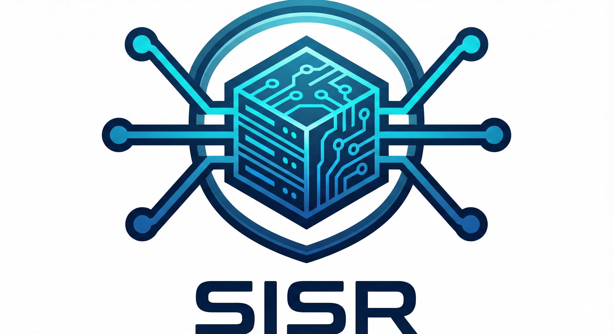
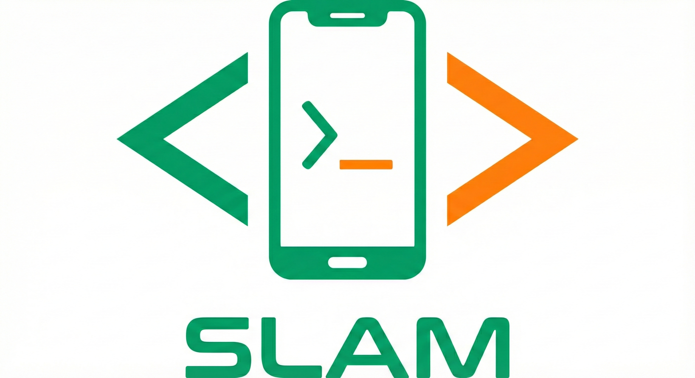

Nos Formations

SISR
- Administration et supervision des systèmes et réseaux
- Cybersécurité et protection des données
- Support et résolution d'incidents (Maintenance)

SLAM
- Conception et développement d'applications
- Gestion et exploitation des données
- Maintenance évolutive et gestion de version